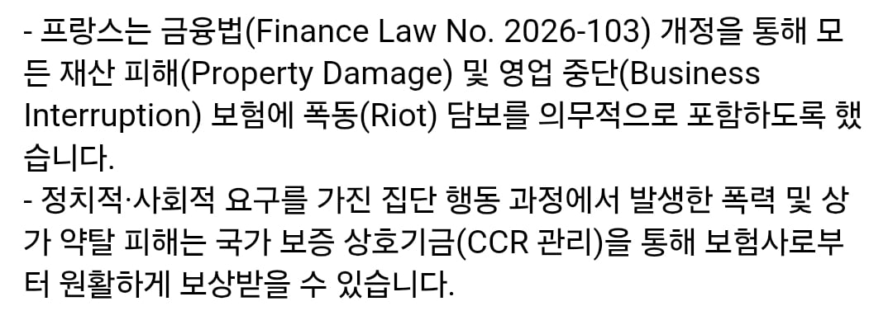

보험사만 좆될뿐

보험사만 좆될뿐
찐빠난 재고 같이 청구하기 ㅋㅋㅋㅋ
음 폭동떄문에 전손됬네요 아쉽게도
보험료가 폭등하겠네
다같이 손해보는거지 ㄹㅇ
시위 자주 발생할수록 보험료는 높아질테고... 그런 보험료 지불하는 사장은 차라리 시위가 좀 발생하길 바랄테고.. 그리고 시위가 더 자주 발생하고...
이후 무한반복
그치 결국 전체적인 사회 비용의 증가지
사장이 시위를 주도하고...
장사안하냐?? 시위가 발생하길 바라는 사장?
프랑스라 그런지 이미 폭동에 대한 담보가 의무로 담겨있네
개꿀이네
일 터져서 보험사랑 엮일 일 있어봤으면 저게 점주들한테 결코 꿀빠는 일이 아니라는걸 알텐데
얘들아 보험된대 맘껏털어!
명품매장은 신나게 털어도 되겠는데? 어차피 다 직영일거고
마스큰 쓴 새끼들 잘봐...
그 가게 사장일 수도 있어..ㅋㅋㅋ 자기 물건 긴빠이 치고 보험사가 물건값 보상해준다? 2배장사자너.. ㅋㅋㅋㅋㅋ
법을 대충 만들면 저래되는거 ㅋㅋ
서로서로 품앗이로 털어가기
청구된 비용은 결국엔 또 다시 사회로 돌아올 텐데.
크게타격이 없는게 맞을까
가게박살나고 하면 뒷정리부터
보험절차 과정까지
머리 존나아플거같은데
당연히 있지
가게 주인이 자기 물품 빼돌리고 이것도 폭동으로 털렸어요 보험처리해줘요 하면 어떻게 되냐
한국같은 경우는 경찰조사 결과따라서 지급하던데 프랑스도 경찰조사 결과따라 미룬다고하면 지급까지 연단위 걸릴듯
약탈은 복지다
라이~엇
벗겨보니사장
역시 전통문화 법까지 해놓고 ㅋㅋㅋ
국가 보증 상호기금은 마르지 않는 샘인가?
사회적 비용 폭등하는거라 상관있긴함
그리고 아무리 보험처리 되어도 결국 손해가 돼
그래서 북미에서도 흑인들 약탈 많이 하는 지역들은 가게들과 사업체들이 딴데로 이사가는 일들이 많은거고
이제 곧 프랑스 노점상에 진품 명품들 개많이 풀리겠네
여행은 타이밍이다
보험료 인상되면
전체 물가인상되고
지옥으로 가는건 마찬가지임
혼자망하냐 손잡고가냐의 차이
프랑스 일처리가 빠를리가 없겠지
보상 받는데 한세월 걸리겠다
생각해보니 프랑스 이새끼들 일 존나 느리잖아 ㅋㅋㅋ
보험금 조오오오온나 안주고 질척거릴거 같은데
없던손해도 청구하겠네